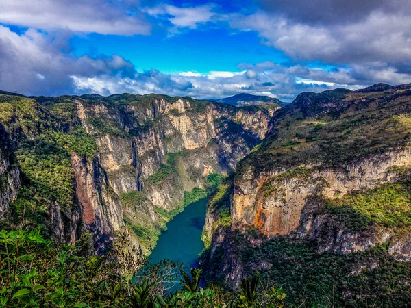

Chiapas es un estado ubicado en la región sureste de México, limitando al sur con Guatemala. Es conocido por su impresionante biodiversidad, su rica herencia cultural, y sus paisajes naturales que incluyen selvas, montañas, ríos, y lagos. La capital del estado es Tuxtla Gutiérrez, pero otras ciudades importantes incluyen San Cristóbal de las Casas y Palenque. Chiapas es hogar de varios grupos indígenas, como los tzotziles, tzeltales, y lacandones, quienes mantienen vivas sus lenguas y costumbres. Su economía se basa en la agricultura, el turismo y la producción de café y ámbar.
Una de las tradiciones más emblemáticas de Chiapas es la Fiesta Grande de Chiapa de Corzo, celebrada en enero, en honor a San Sebastián. Durante esta festividad, se realizan danzas tradicionales como la de los Parachicos, que fue declarada Patrimonio Cultural Inmaterial de la Humanidad por la UNESCO. Esta danza incluye hombres enmascarados y vestidos con sarapes que recorren las calles al son de la música. Otra tradición importante es la Semana Santa en San Juan Chamula, donde se mezclan rituales católicos e indígenas en una celebración única que refleja el sincretismo religioso de la región.
La gastronomía chiapaneca es variada y rica en sabores. Uno de los platillos más representativos es el tamal de chipilín, hecho con masa de maíz mezclada con la hoja de chipilín y relleno de carne. Otro platillo tradicional es el cochito, que es cerdo adobado y horneado con una mezcla de especias y chile. La sopa de pan, una sopa espesa hecha con pan, caldo de pollo, plátano macho y especias, también es un clásico de la cocina chiapaneca.
| Dato de interés | Dato de interés | Dato de interés |
|---|---|---|
| Chiapas es hogar de la Selva Lacandona, una de las selvas tropicales más importantes de México, que alberga una gran diversidad de flora y fauna, incluyendo especies en peligro de extinción como el jaguar y la guacamaya roja. | El estado es famoso por las ruinas mayas de Palenque, una de las zonas arqueológicas más importantes de México, que cuenta con templos y estructuras que datan de los siglos VII y VIII, incluyendo el Templo de las Inscripciones y el Palacio. | Chiapas es el principal productor de café en México, conocido por su alta calidad y sabor distintivo, que proviene de las fincas ubicadas en las montañas de la región. El café chiapaneco es exportado a todo el mundo y es uno de los productos más emblemáticos del estado. |